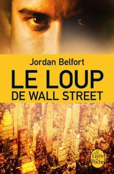

L’auteur Jordan Belfort est une personnalité américaine, emblématique du monde de la finance par sa tromperie. Grand trader des années 80, il se construira un empire dans les rues de Wall Street. Il écrit ce livre lorsqu’il est en prison pour escroquerie et criminalité. Le livre a été publié en 2007 et résume sa vie de riche délinquant.
Un livre autobiographique écrit par Jordan Belfort. Inculpé pour escroquerie et criminalité financière, il résume sa vie de trader pervers qui travaille à Wall Street durant les années 1980. Son seul objectif est d’être le plus riche possible. Sa vie financière est une réussite mais sa vie sentimentale est un échec. Son comportement pervers et corrompu le conduira en prison pour 22 mois.

Il existe des différences entre le film et la réalité. Des actions spectaculaires comme l’atterrissage de son hélicoptère alors qu’il est sous l’emprise de stupéfiants ou le naufrage de son bateau en pleine mer pour récupérer ses 20 millions de dollars en Suisse peuvent paraître irréelles. Mais l’agent du FBI qui l’a traqué pendant 10 ans affirme que tout cela est vrai. Au début du film, il y a une fête où Jordan Belfort et ses collègues lancent des nains contre des cibles. Mais en réalité, il n’y a pas eu de lancer de nains. Dans le film, il y a des animaux dans les locaux de l’agence, comme un lion. En réalité, il n’y a eu que la présence d’un chimpanzé. Les collègues de Jordan Belfort ne le surnommaient pas "Le Loup".

"Les collègues de Jordan Belfort ne le surnommaient pas "Le Loup""
La plupart des répliques de Leonardo DiCaprio sont tirées du livre. Néanmoins, le livre met en évidence des différences avec le film. Dans le film, nous assistons à une arrestation spectaculaire du héros. En réalité, cette arrestation ne l’était pas. Jordan Belfort n’a pas tenté de corrompre un policier pour se préserver. Les ravages de la drogue et de son déclin sont également très peu exprimés par rapport à la réalité. Jordan fait une cure de désintoxication qui ne sera pas mentionnée dans le film. Le film n’insiste pas sur le fait que Jordan Belfort contribue énormément à la prospérité de Madden Shoes.
"Jordan fait une cure de désintoxication qui ne sera pas mentionnée dans le film"
On remarque des versions différentes de la rupture entre Jordan et Naomi. Dans le film, c’est une rupture spectaculaire et puissante. Alors que le livre raconte une rupture moins explosive et à un moments différent de la vie du héros. Le livre détaille beaucoup plus les arnaques, le monde de la finance en général alors que le film reste axé sur le caractère des personnages.

"Dans le film, nous assistons à une arrestation spectaculaire du héros. En réalité cette arrestation ne l’était pas."